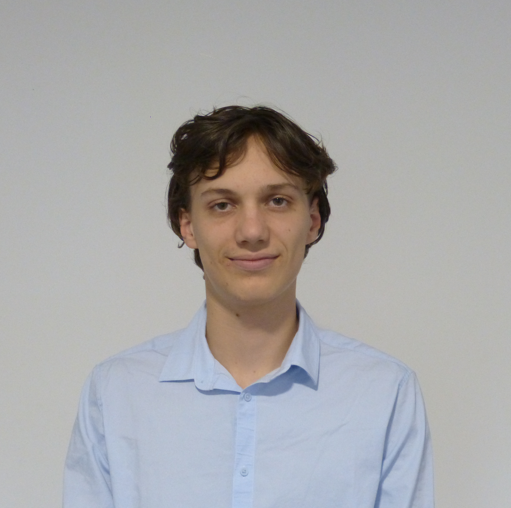

Bienvenue

Vous pouvez me contacter par email : louis.chouane@etu.toulouse-inp.fr,
ou par téléphone : +33 6 58 44 32 16
Vous pouvez me contacter par email : louis.chouane@etu.toulouse-inp.fr,
ou par téléphone : +33 6 58 44 32 16
Ayant été à la Prépa des INP, j'ai eu la chance de pouvoir faire un stage de 6 semaines dans le monde de l'ingénierie. Ces stages ont été des expériences très enrichissantes tant sur le plan technique qu'humain.
Durant ce stage, j'ai pu intégrer le DDL (Département Développement Logiciel) où j'ai participé au développement du logiciel ANTARES, un outil de prévision à moyen/long terme des équilibres d'offre et de demande d'électricité sur le réseau européen.
Ce stage m'a permis de découvrir les métiers d'ingénieur logiciel, et a conforté mon choix de parcours.
Indécis entre informatique et électronique, j'ai effectué un stage chez SERAAP et SETAP, où l'on conçoit et assemble des chaînes de production ainsi que le câblage et les automates d'armoires électriques.
J'ai ainsi compris que ce n'était pas le métier qui m'inspirait, ce qui m'a poussé à m'intéresser davantage à l'informatique.
Pratiquant l'escalade depuis trois ans, ce sport m'a appris à développer la résilience et l'esprit de collaboration pour atteindre un objectif, notamment dans des voies difficiles.
J'ai également suivi une formation ISAE (Initiateur sur Structure Artificielle d'Escalade), ce qui me permet d'animer des sessions d'escalade pour tout public. Cette formation m'a apporté des notions de technique, de sécurité, et de pédagogie.
Je suis aujourd'hui investi dans le club Gr'INP, où j'encadre des sessions d'accès libre à la salle d'escalade.
Amateur de musique baroque, j'ai suivi pendant neuf ans des cours d'orgue et de solfège au Conservatoire de Thouars.
Me produisant régulièrement en audition devant un public, j'ai appris à gérer mon stress et à maintenir mon attention sous pression, ce qui a été une experience très enrichissante.
Passionné par la nature et les activités de plein air, j’ai été engagé plusieurs années dans le scoutisme, où j’ai développé un fort esprit de collaboration. Le scoutisme m’a permis d’apprendre l’importance de l’entraide, de la cohésion et de la responsabilité, que ce soit au sein d’un groupe ou en autonomie.
Les expériences de terrain et de gestion de groupe que j'y ai vécues m'ont apporté une réelle capacité d’adaptation et de dépassement de sois, qui ont forgé mon caractère et m'ont aidé tout au long de ma vie.
En tant qu'élève en école d'ingénieur, nous approfondissons notre spécialisation chaque semestre pour développer des compétences techniques et pratiques, en vue d'intégrer le monde du travail.
1ère année SN - Semestre 5
1ère année SN - Semestre 6
J'aimerais effectuer mes stages de première et deuxième année à l'étranger pour expérimenter une autre langue dans un contexte professionnel.
Ayant étudié le portugais en seconde langue, j'aimerais effectuer mon stage de première année au Portugal. J'ai déjà pu entrer en contact avec une entreprise à Vila de Rei.
Pour améliorer ma communication en anglais, je souhaiterais effectuer mon stage de deuxième année en Angleterre.
Je suis également intéressé par un semestre d'échange dans une université au Canada, idéalement en troisième année.
En tant que futur citoyen, j'essaie de m'engager dans la vie de la communauté.
Avec l'association étudiante net7, je souhaite participer à l'événement Capitole du Libre qui se déroulera le week-end du 16 et 17 novembre.
Pendant cet événement, nous aurons l'opportunité d'accompagner les participants et d'animer des stands d'activités et de tutoriels liés à l'informatique.
Je souhaite m'investir dans le club Gr'INP pour encadrer des sessions d'escalade avec des ateliers de découverte et des événements comme la Nuit de l'Escalade.
Pour cela, j'ai suivi une formation ISAE.